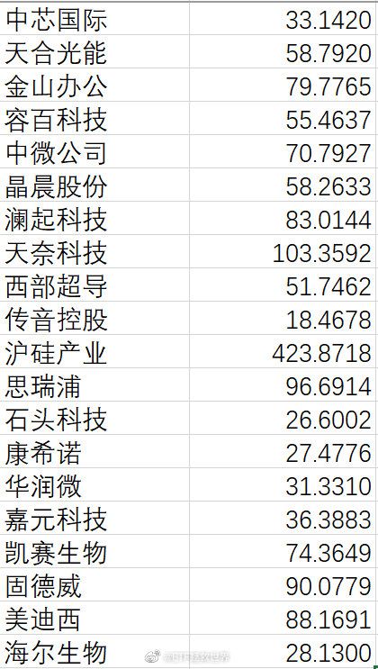
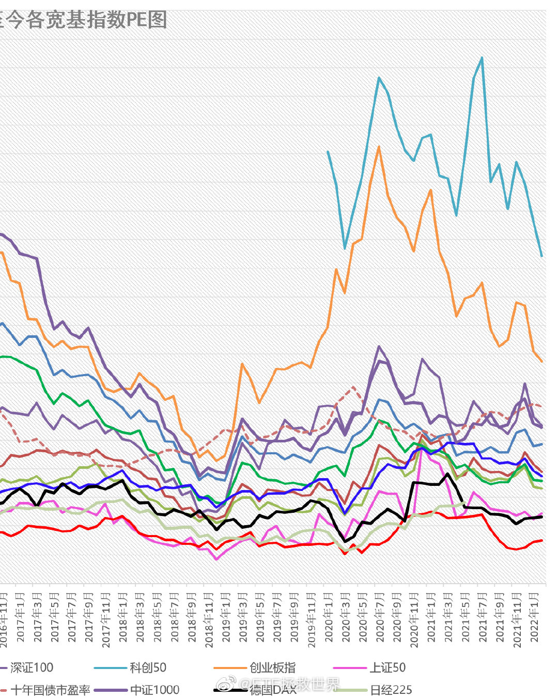

特别难。难在哪里。你左侧买吧，他说参考了你的买了就亏；你左侧一点都不买全都右侧吧，万一一根大阳线手里什么都没有他又说你踏空了；你分成150份，左侧买10份吧，他说：什么150？我只看买了的这10份！你说现在高位，新朋友别跟了。他说我就要跟。浮亏了我就骂你。低位你说咱们第三轮牛市顶部开始建仓，最差的时候整体也没赔过钱。他说买余额宝的都没赔钱。低位你说我跑赢了同期沪深300接近50%，跑赢中证500超过70%，他说你年化多少？高位你说我年化上来了，他说你跑赢最疯狂的那个指数了吗？你说我是第二轮最高点清仓后牛市最高点开始的第三轮，不能跟熊市最低位开始的组合比。他说高点开始低点开始都一样。我承认我菜……您走吧……
这条也是关于我对“投资群”看法的。新朋友可以考虑一下。@ETF拯救世界:再多说两句关于“投资群”。我非常不喜欢投资群。除非是三五志同道合的朋友。否则投资群越大，人越多，负面效果越明显。尤其是很多本来正确投资理念还没成型的朋友进去后，更是百害无一益。再者，有人的地方就有江湖。几十几百人凑在一起，又是牵扯到金钱利益的主题，更是不免乌烟瘴气矛盾重重。还有，有没有人怀着不可告人的目的进群？很多朋友都非常单纯，非常容易相信别人，这就又埋下了祸根。另外，几十几百人说话，你一言我一语，不停刷新信息，太耽误时间。而且大概率是没有意义甚至有害的信息占用了你宝贵的时间。投资本来就是安安静静，踏踏实实，慢慢研究，慢慢实践才有乐趣。你在我这里好不容易能够静下心来对待投资，到群里又开始心浮气躁那又何苦呢。综上，投资群，不入也罢。风花雪月群就不一样了，有空记得拉我。
关于“投资群”，我的一点想法，至今未变。总而言之，投资群就是耽误时间+几乎没有营养+各种牛鬼蛇神出没+小白互相干扰的一个地方。真那么有时间在里面聊天，去做点有价值的事情不好吗。@ETF拯救世界:我的建议：不要加什么搞钱群。人稍微一多，骗子就会在里面兴风作浪。更何况是搞钱群？做投资就是自己踏踏实实做，在网上主动去吸收一些自己需要的营养。你弄个群，噼里啪啦七嘴八舌在里面，不仅耽误时间，也学不到什么有用的东西。反而因为被动信息太多，扰乱了自己的思维。在我的认知中，搞钱群基本就是大多数小白加小部分骗子的聊天室……当然，只是我的印象。如果真有大神愿意在群里耗费大量时间精力为几百几千小白解答投资困惑，当我没说。群的话，风花雪月聊一聊好了呀。侬晓得哇，不要拎不清的呀。
老朋友都知道我喜欢的三个品种：消费、医药、科技。消费和医药不用说了。科技方面，中概+恒科主要配置的是“软科技”，而A股上市的大多数是“硬科技”。当然，到底这些企业到底有多少科技含量我们不讨论，只是说会这样划分。所以未来中概恒科+信息或科创等品种，使我们配置科技板块的思路。
整体来看，科创的优势是利润增速其实不错。未来我也想买，也大概有个买入区间。但这个就不说了，因为指数太新，比较模糊，还是不说了。看看未来150和S有没有机会买吧。@ETF拯救世界:科创50现在是不是低位，今天之后能不能涨我不知道。但这是科创50自由流通市值前20位的股票TTM PE。你告诉我这个指数估值只有30多倍，无论如何我是不信的。 
很多人一看到跌就慌了。为什么慌，因为他根本没想过会跌。或者说，没想到过会急跌或者阴跌。我在买一个品种，或者想买一个品种的时候，会计算一个“能理解的最低位”。然后以这个位置为基础，左侧也好右侧也好，布置自己的资金进去。如果价位并未跌穿你的“能理解的最低位”，有什么慌的？不是一切都在预料中吗？什么，你没有计算出“能理解的最低位”？那还愣着干什么，赶紧刷我微博啊。PS，这个最低位能不能跌破呢。当然了，任何事情都有可能发生。这是一个概率问题。我自己计算的最低位，从历史上看，不是说没跌破过，但一段时间之后，绝大多数都被证明那是一个非常好的价位。（历史不代表未来。这还是一个概率问题。）
回复@ETF拯救世界:7个月前给的价位。信息从4300上调到4500。该位置配满信息科技仓位。一切尽在掌握。//@ETF拯救世界:历史低价信息4300，医药9500。可梭哈一把配满。@ETF拯救世界:下阶段布局目标：医药、信息。希望它们不要不识抬举，好好给我跌。医药好价：12000点。信息好价：5000-5400点。非历史好价，但低于去年双十一，刚需可入。
有人问：xx那里为什么科创50只有30多倍估值？我的回答：第一，这个问题你问我干嘛？不应该去xx问客服吗？第二，科创50一共50支成分股，其中40倍以下的15支，大部分都非权重股。这个30倍难道不是很可疑吗。碰到任何问题、数据、说法，我们应该想一想，看一看，查一查是不是合理。别人说什么你就信什么，那就很危险。我的大部分身家都买指数基金，所以我绝对不会相信任何人的数据，这十几年，一定要自己算才踏实。
个股我不讨论，因为个股的估值非常非常复杂。不是说亏损或者PE 400倍就不能买，也不是说PE4就一定有价值。但是，指数，你永远应该记住一句话：如果你买60、70、80甚至更高估值的指数，那么，你就应该做好随时跑路的准备。如果你不知道怎么跑路，那么就应该做好被深套的准备。如果你不会跑路也不想被深套，那就——别买。
科创即将跌破1000点+终于快跌破50倍了。这个指数存在2年，所有买入还没有卖出的全都被埋了。即使如此，依然是50倍……好消息是，相比2年前的1000点，估值已经降了很多了。那时候……是80倍。@ETF拯救世界:今日数据：科创50今日创出上市以来估值最低，终于快跌破60倍了……创业板也终于有可能元神归位了。 